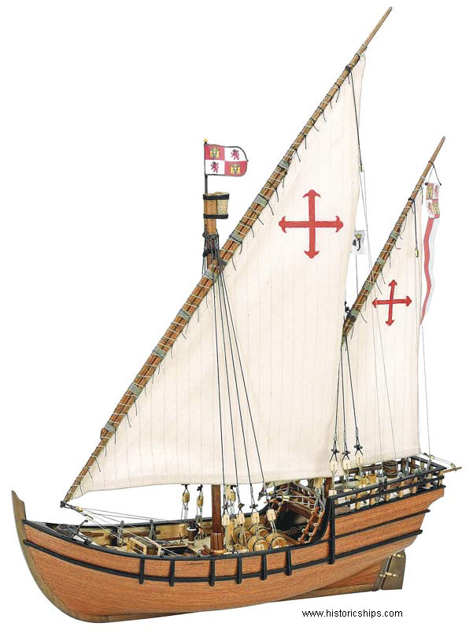
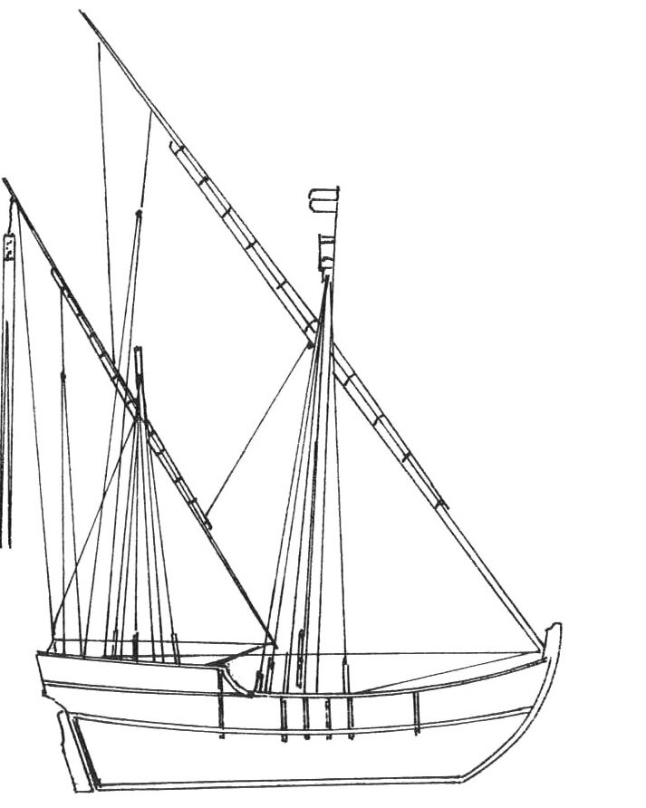
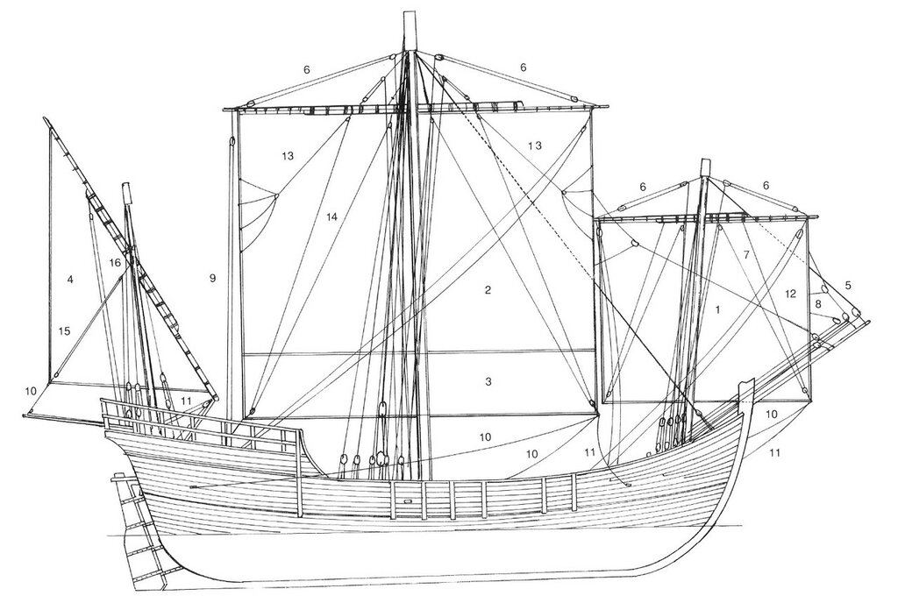
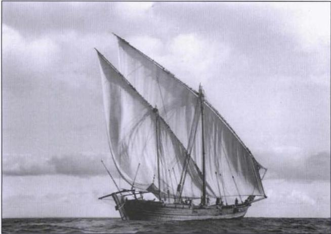
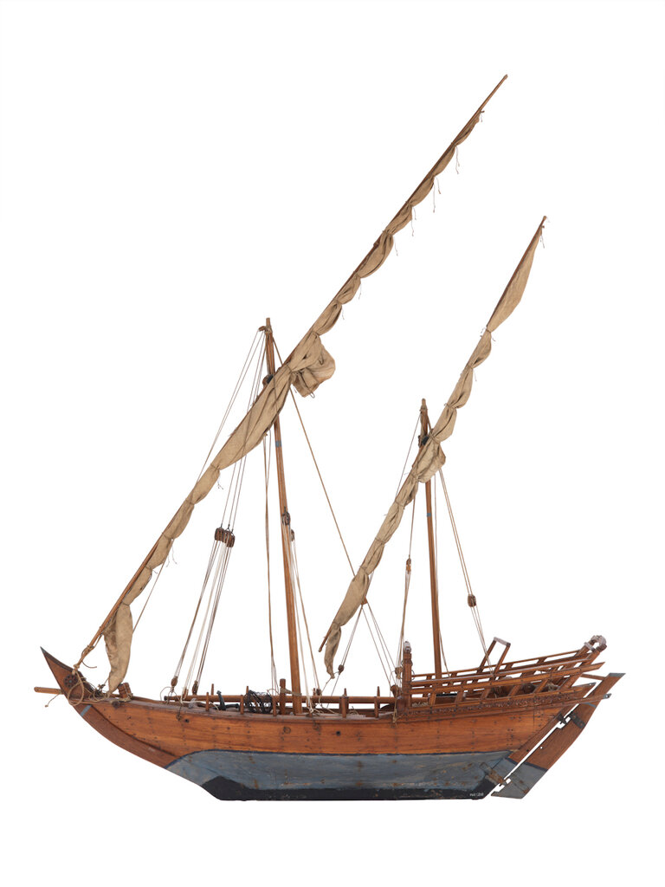
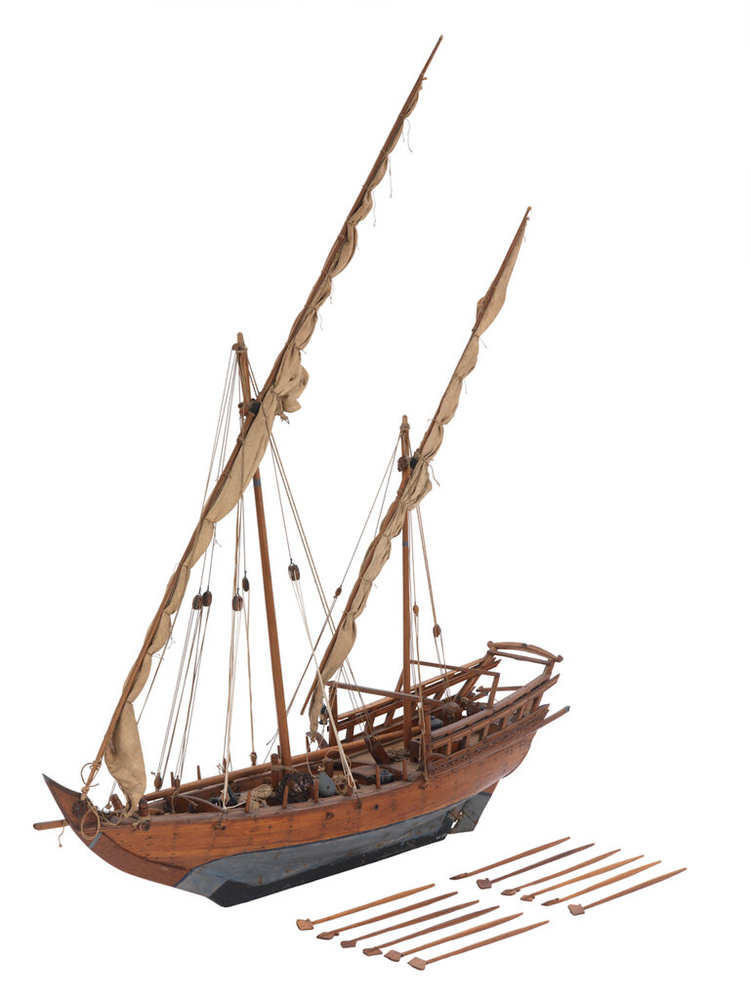
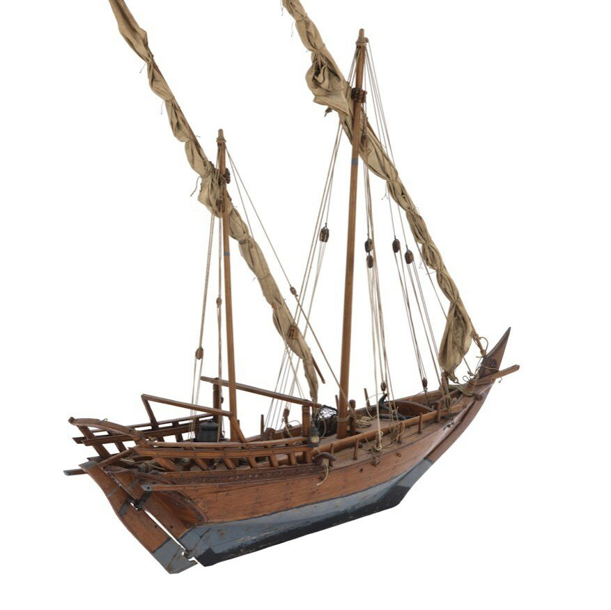
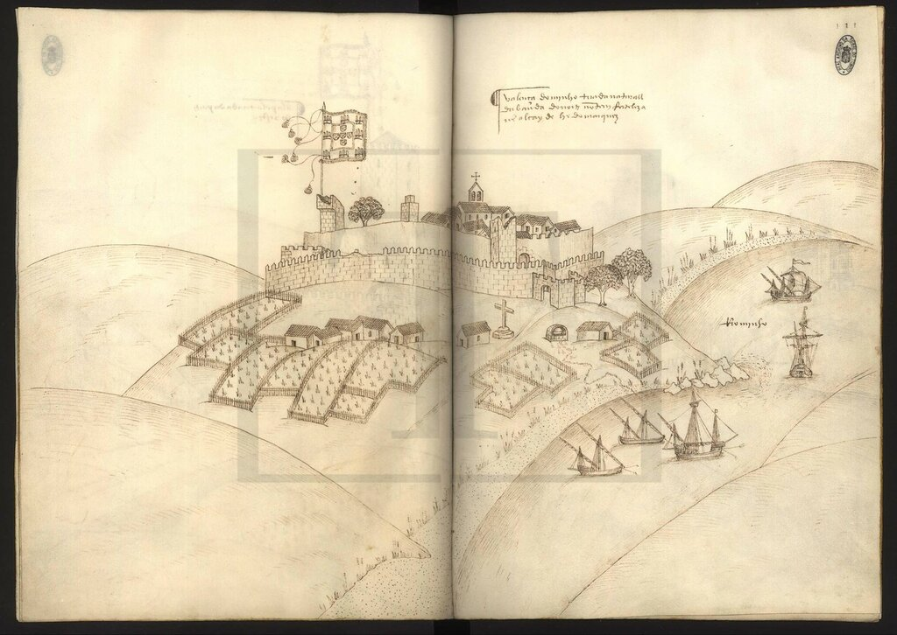
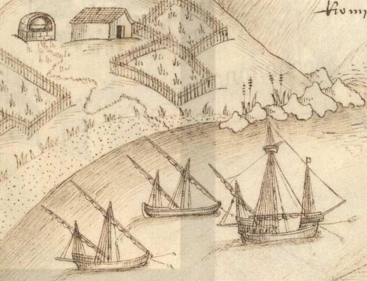
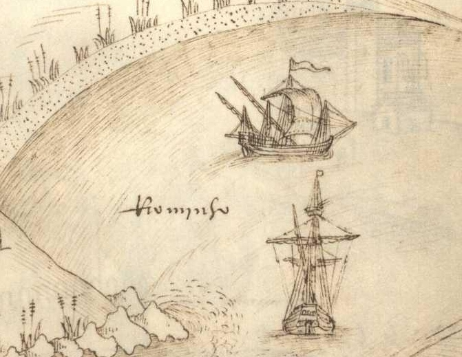

Каравелла – корабль исследователей и авантюристов
И если матерьял был интересен,
Торжествовал исследователь наш,
И в книжке быстро бегал карандаш.
Д. С. Мережковский. Вера
Мы уже узнали, какие преимущества приобретала каравелла благодаря латинским парусам, малой осадке, большой маневренности. Но для длительных походов в неизвестные воды этого было мало.
Долгое путешествие требовало наличия большого количества питьевой воды. А для этого необходимо было либо заранее разведать имеющиеся на маршруте источники пресной воды на берегу, либо иметь требуемый запас питьевой воды с собой.
Длительный поход, как мы уже отмечали выше, сопровождался большой смертностью среди членов экипажа по самым различным причинам, что требовало наличия резервных членов экипажа по сравнению с обычным штатным составом команды.
Неблагоприятные внешние условия при длительном плавании в неизвестных водах, при неожиданных погодных условиях, при ограниченных географических познаниях предъявляли совершенно особые требования к морским качествам членов экипажа каравеллы. Там не должно быть случайных людей.

Модель каравеллы Нинья, как она выглядела в начале первой экспедиции Колумба
Ну и, наконец, конструкция каравеллы, конечно же, требовала учета маршрута путешествия. Если плавания вдоль западных берегов Африки вполне успешно совершались на португальских каравеллах с латинскими только парусами – caravela latina, то пересечение Индийского океана и поход к американским берегам, да и что там, переход на Канарские острова, потребовали изменения такелажа. На фок-мачте, а затем и на грот-мачте начали ставить прямые паруса, сохранив латинские лишь на кормовых мачтах. Каравелла превратилась, как мы писали выше, в caravela redonda, именно такую каравеллу стали вслед за португальцами использовать и испанцы. Но использование того или иного такелажа не являлось для моряков застывшей догмой. Так, две каравеллы экспедиции Колумба, Niña и Pinta в ходе путешествия неоднократно меняли тип парусного вооружения на носовых мачтах с латинского на прямое и обратно. В начале путешествия во время остановки на Канарских островах Нинья была переоснащена из каравеллы латины

(см. также в начале поста)
в каравеллу редонду

Мы можем видеть, что была добавлена невысокая фок-мачта и на ней, как и на грот-мачте, были помещены прямые паруса. Все работы по переоснащению заняли, как мы знаем из дневников Колумба, около одной недели. В дальнейшем в дневниках не отмечается никаких проблем с парусами Ниньи, более того, она пошла и во второе путешествие.
Нам трудно сейчас восстановить в деталях конструкцию корпуса первых исследовательских каравелл. В Испании система измерения корпуса судна и его грузоподъемности была разработана только при Филиппе II (правил в 1556-1598 гг.) Только с этой эпохи мы получаем документальные данные об используемом корабельном лесе, размере и тоннаже кораблей. Следует, к слову, отметить, что испанские документы по кораблестроению того времени продолжали использовать португальские единицы измерения: dedos (1,83 см), palmos (25,67 см) и rumos (1,54 м).
Чтобы разобраться с конструкцией первых каравелл, обратимся к другим возможностям, которыми располагают морские историки. В морской археологии есть метод получения данных об объектах прошлого, который подразумевает сравнение их с современными традиционными объектами, сохранившими основные черты своих древних прародителей. Так вот, в отношении старинных каравелл с латинскими парусами современным наследником считается разновидность арабского доу – самбук (سنبوك) (или самбука, как еще называют это судно).

Фотография самбука, сделанная в 1938 г. Выставка в Кувейте 1998 г.
В Военно-морском музее в Гринвиче имеется замечательная модель самбука, который использовался ловцами жемчуга и рыбаками в Персидском заливе.

На каждом борту имелось по шесть уключин для весел, что свидетельствует о том, что это было парусно-гребное судно. Хотя весла использовались, как представляется, лишь во время ловли жемчуга: на их лопастях крепились тросы, которые страховали ловцов во время погружения и давали возможность им отдохнуть между погружениями.

Меня больше всего в конструкции самбук заинтересовала плоская транцевая корма.

В старинных описаниях первых каравелл отмечается, что корма и у них была плоская. Однако на рисунках той эпохи не всегда удается рассмотреть вид кормовой части судна, что приводит к затруднениям при классификации кораблей, показанных на том или ином изображении. Однако, больше вопросов вызывают работы, когда каравеллами называют суда, имеющие вполне явственно круглую, а не плоскую корму. Рассмотрим в качестве примера изображения каравелл из известного сочинения Дуарте де Армаса (сподвижника короля Португалии Мануэла I) «Книга крепостей» ( Livro das fortalezas situadas no extremo de Portugal e Castela por Duarte de Armas, escudeiro da Casa do rei D. Manuel I ). Ее создание относят к периоду между 1495 и 1521 годами, иногда привязывают к конкретной дате 1510 г. В книге с большой тщательностью изображены крепости на границах Португалии с королевством Кастилия. Посмотрим, для примера, вид крепости Валенса, расположенной на реке Миньо. В ту пору река была вполне судоходна и на ней мы видим несколько крупных кораблей морского плавания.

Присмотримся внимательно к группе из трех кораблей на переднем плане

Один из них, более крупный, относится к типу нава (неф, каракка) и в данный момент мы на него отвлекаться не будем. Что касается оставшихся двух, то их обычно относят к каравеллам. Низкий профиль, отсутствие носовой надстройки, две мачты с латинскими парусами – типичные каравеллы-латины. Передняя мачта расположена далеко от носа, как бы оставляя место для возможной установки еще одной мачты в носу. Как это сделано на другом корабле с этой же гравюры, с правой ее части

Здесь не только поставлена фок-мачта с прямым парусом, но прямой парус установлен и на грот-мачте, и поставлена дополнительная бизань мачта в корме – т.е. мы видим превращение каравеллы-латины в каравеллу-редонду.
Однако в данный момент нас будет интересовать судно из первой группы, расположенное в ее центре. Мы ясно видим, что корма у него не плоская, а круглая, как у галеры. Это заставляет сомневаться в правомочности причисления данного корабля к каравеллам, как это делается во всех практически работах, исследующих эти изображения. Или следует выделить этот корабль в самостоятельный подвид каравелл, отличающийся своими конструктивными и мореходными качествам.
Продолжим позже.